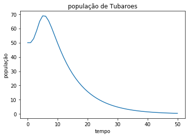

- 
.png)
.png)
O processo desse projeto
Para o projeto de iniciação da matéria simulação do mundo físico tivemos um tema fixo para todos os grupos, esse era a modelagem de três populações que interagem entre si (Rais, Vieiras e Tubarões). Apesar de um tema físico fixo cada grupo tinha a sua pergunta que deu o caminho para continuação. Assim utilizando os conhecimentos de programação e modelagem que tínhamos adquirido até o momento, após muito trabalho, os alunos tinham respostas para suas respectivas perguntas.
A minha pergunta foi a seguinte: Qual será a consequência da superpopulação de raias no habitat estudado? Para responder esta pergunta tivemos de fazer uso de conhecimentos reais de biologia e combinar estes conhecimentos com o conceito básico de modelagem que tínhamos para simular algo que respondesse a sua pergunta sendo coerente com o modelo ao mesmo tempo. O maior desafio deste projeto foi realizar uma modelagem com equações diferenciais sendo que acabamos de ingressar no Insper e estamos trabalhando com conceitos completamente abstratos. Após o termino do trabalho uma apresentação para os professores e alunos foi realizada onde os alunos dissertaram sobre seus projetos.